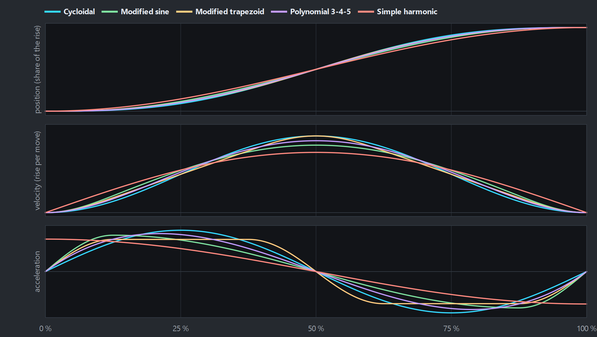

Motion laws
A segment's law is the shape of its move from one position to the next. The choice decides how hard
the motor and the machine work: a law that starts and ends gently lets the machine run faster without
knocks.

Five laws over one move, at the same rise and time: position, velocity and acceleration.
The laws
| Law | Ends at rest | Use it for |
|---|
| Dwell | — | no motion; its end is tied to its start |
| Cycloidal | yes, zero acceleration | a safe default: smooth start and stop |
| Modified sine | yes | heavier loads and index drives: lower peak velocity |
| Modified trapezoid | yes | fast, light moves: the lowest peak acceleration |
| Polynomial 3-4-5 | yes | a smooth polynomial, a little gentler on velocity than cycloidal |
| Polynomial 4-5-6-7 | yes, and zero jerk | the smoothest, for slightly higher peaks |
| Simple harmonic | yes, but acceleration jumps | oscillating out and back |
| Linear | no | constant speed: riding a conveyor or the line between other moves |
| Blend (match neighbours) | no | joining a dwell to a linear sync smoothly (a flying saw's ramp) |
| Cubic spline | no | a smooth curve through points you give (measured data, a drawn shape) |
Choosing
- Start with Cycloidal. It starts and ends with zero acceleration, so it joins dwells without a knock.
- Peaks too high? Modified trapezoid lowers the peak acceleration (motor torque); modified sine lowers
the peak velocity (motor speed). Or give the move more of the cycle.
- Linear has velocity jumps at its ends unless its neighbours match its speed. Put a Blend
segment on each side: a Blend starts and ends at its neighbours' velocities with zero acceleration, so
dwell → Blend → Linear → Blend → return runs smoothly.
- Between two rests a Blend is the 3-4-5 polynomial.
- Cubic spline is the one law that works across segments: consecutive Spline segments make a single
smooth curve through all their knots, so moving one knot reshapes its neighbours. Use it when the shape comes from
points rather than from a rise and a dwell.
- Next to any other segment it takes that segment's velocity, so there is never a velocity step. It can still have
an acceleration step there, and the Analysis page says so. A Blend at the end of the run removes it.
- Make every segment of a repeating axis a Spline and the curve closes on itself with no step at all, through
the wrap too.
- A spline can swing past the points it goes through, most of all after a steep rise into a flat stretch. The
Analysis page warns when it passes your highest or lowest knot by over 2% of their range: add a knot, or end the run
with a dwell.
The Analysis page flags any velocity step (infinite acceleration) and acceleration step
(infinite jerk) the laws you pick leave at a knot; the diagram marks them with warning signs.
The formulas are in docs/MATH.md in the project.